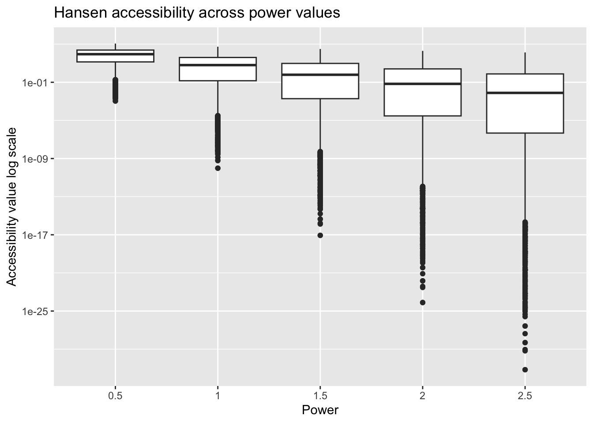

# install and load required packages in one call
pacman::p_load(tmap, SpatialAcc, sf, # mapping, accessibility, simple features
ggstatsplot, reshape2, # statistical graphics, data reshaping
tidyverse, ggplot2) In-class Ex09
1 Modelling Geographical Accessibility
1.1 Introduction
In this exercise you will learn to model geographical accessibility in R using packages for simple features, mapping and accessibility computation. We will prepare the data, evaluate Hansen accessibility at five power settings (0.5, 1.0, 1.5, 2.0, and 2.5) and plot a single summary graph.
1.2 Getting Started
Install and load required packages. The code uses pacman::p_load() to install on demand and load in one step.
1.3 Geospatial data wrangling
1.3.1 Importing geospatial data
Three geospatial data will be imported from the data/geospatial sub-folder. They are MP14_SUBZONE_NO_SEA_PL, hexagons and ELDERCARE.
The code chunk below is used to import these three data sets shapefile by using st_read() of sf packages.
# read URA subzones as simple features
mpsz <- st_read(dsn = "/Users/cktan/Desktop/SMU/01_Geospatial Analytics (ISSS626)/Hands-on_Ex/Hands-on_Ex09/data/geospatial",
layer = "MP14_SUBZONE_NO_SEA_PL") # polygon layerReading layer `MP14_SUBZONE_NO_SEA_PL' from data source
`/Users/cktan/Desktop/SMU/01_Geospatial Analytics (ISSS626)/Hands-on_Ex/Hands-on_Ex09/data/geospatial'
using driver `ESRI Shapefile'
Simple feature collection with 323 features and 15 fields
Geometry type: MULTIPOLYGON
Dimension: XY
Bounding box: xmin: 2667.538 ymin: 15748.72 xmax: 56396.44 ymax: 50256.33
Projected CRS: SVY21# read hexagon grid as simple features
hexagons <- st_read(
dsn = "/Users/cktan/Desktop/SMU/01_Geospatial Analytics (ISSS626)/Hands-on_Ex/Hands-on_Ex09/data/geospatial",
layer = "hexagons") # polygon gridReading layer `hexagons' from data source
`/Users/cktan/Desktop/SMU/01_Geospatial Analytics (ISSS626)/Hands-on_Ex/Hands-on_Ex09/data/geospatial'
using driver `ESRI Shapefile'
Simple feature collection with 3125 features and 6 fields
Geometry type: POLYGON
Dimension: XY
Bounding box: xmin: 2667.538 ymin: 21506.33 xmax: 50010.26 ymax: 50256.33
Projected CRS: SVY21 / Singapore TM# read eldercare locations as simple features
eldercare <- st_read(
dsn = "/Users/cktan/Desktop/SMU/01_Geospatial Analytics (ISSS626)/Hands-on_Ex/Hands-on_Ex09/data/geospatial",
layer = "ELDERCARE") # point layerReading layer `ELDERCARE' from data source
`/Users/cktan/Desktop/SMU/01_Geospatial Analytics (ISSS626)/Hands-on_Ex/Hands-on_Ex09/data/geospatial'
using driver `ESRI Shapefile'
Simple feature collection with 120 features and 19 fields
Geometry type: POINT
Dimension: XY
Bounding box: xmin: 14481.92 ymin: 28218.43 xmax: 41665.14 ymax: 46804.9
Projected CRS: SVY21 / Singapore TMThe report above shows that the R object used to contain the imported MP14_SUBZONE_WEB_PL shapefile is called mpsz and it is a simple feature object. The geometry type is multipolygon. it is also important to note that mpsz simple feature object does not have EPSG information.
1.3.2 Cleaning and updating attribute fields of the geospatial data
There are many redundant fields in the data tables of both eldercare and hexagons. The code chunks below will be used to exclude those redundant fields. At the same time, a new field called demand and a new field called capacity will be added into the data table of hexagons and eldercare sf data frame respectively. Both fields are derive using mutate() of dplyr package.
# keep only id and address then add constant capacity field for supply locations
eldercare <- eldercare %>%
select(fid, ADDRESSPOS) %>% # retain unique id and address
mutate(capacity = 100) # placeholder capacity for each facility# keep only id then add constant demand field for each hexagon cell
hexagons <- hexagons %>%
select(fid) %>% # retain unique id of each grid cell
mutate(demand = 100) # placeholder demand for each cellNotice that for the purpose of this hands-on exercise, a constant value of 100 is used. In practice, actual demand of the hexagon and capacity of the eldercare centre should be used.
1.4 Apsaital Data Handling and Wrangling
1.4.1 Importing Distance Matrix
The code chunk below uses read_cvs() of readr package to import OD_Matrix.csv into RStudio. The imported object is a tibble data.frame called ODMatrix.
# import distance matrix as a tibble
ODMatrix <- read_csv(
"/Users/cktan/Desktop/SMU/01_Geospatial Analytics (ISSS626)/Hands-on_Ex/Hands-on_Ex09/data/aspatial/OD_Matrix.csv",
skip = 0
) # columns include origin, destination and costsRows: 375000 Columns: 6
── Column specification ────────────────────────────────────────────────────────
Delimiter: ","
dbl (6): origin_id, destination_id, entry_cost, network_cost, exit_cost, tot...
ℹ Use `spec()` to retrieve the full column specification for this data.
ℹ Specify the column types or set `show_col_types = FALSE` to quiet this message.The code chunk below uses spread() of tidyr package is used to transform the O-D matrix from a thin format into a fat format.
# build a wide distance matrix using total_cost
# select needed columns then spread destination ids to wide columns
# finally drop the origin_id column once it has become the row id
distmat <- ODMatrix %>%
select(origin_id, destination_id, total_cost) %>% # pick the three fields we need
spread(destination_id, total_cost) %>% # convert thin table to wide table by destination
select(c(-c('origin_id'))) # remove origin id column after spreading
Note
Since tidyr version 1.0 a new function called pivot_wider() is introduce. You should use pivot_wider() instead of spread()
Currently, the distance is measured in metre because SVY21 projected coordinate system is used. The code chunk below will be used to convert the unit f measurement from metre to kilometre.
# convert metres to kilometres and coerce to numeric matrix
distmat_km <- as.matrix(distmat / 1000) # numeric matrix required by SpatialAcc::ac1.5 Modelling and Visualising Accessibility using Hansen Method
1.5.1 Evaluate Hansen accessibility at five power settings
# evaluate Hansen accessibility at five power settings and plot a single summary graph
powers <- c(0.5, 1.0, 1.5, 2.0, 2.5) # the required power values
# compute accessibility for each power value and collect results in a long table
acc_long <- lapply(powers, function(p) {
tibble::tibble(
power = p, # record the power value used
acc = as.numeric( # coerce to numeric vector
SpatialAcc::ac(hexagons$demand, # demand at each origin cell
eldercare$capacity, # capacity at each supply point
distmat_km, # distance matrix in kilometres
power = p, # current power value
family = "Hansen")) # Hansen method
)
}) %>% dplyr::bind_rows()1.5.2 Plot a single summary graph
Draw a box plot on log scale that is used to compare levels and spread clearly
# draw one graph that shows how the distribution changes across power values
ggplot(acc_long, aes(x = factor(power), y = acc)) +
geom_boxplot() +
scale_y_log10() +
labs(title = "Hansen accessibility across power values",
x = "Power",
y = "Accessibility value log scale")
1.5.3 Insight and implication
Here is what the box plot is telling us.
As power increases from 0.5 to 2.5 the median accessibility drops steadily. A larger power applies stronger distance decay, so far facilities contribute far less. The system becomes dominated by very near supply.
The spread expands toward very small values as power rises. Many cells fall to extremely low accessibility once distance is penalised more strongly. In other words, places that rely on distant facilities become the most disadvantaged when power is large.
A small set of cells near facilities keep relatively high values even at larger power. This shows that the index increasingly rewards immediate proximity as distance sensitivity grows.
Implications for analysis and planning
Ranking of cells is model sensitive. Reports should state the chosen power and show a sensitivity band across the five settings, since policy conclusions may change if a different decay is assumed.
Equity signals sharpen with larger power. Peripheral or poorly served neighbourhoods look much worse when travel impedance matters more. Target these for new capacity or improved transport links.
Site selection logic changes with the setting. Smaller power spreads benefits widely and is suitable when people are willing to travel farther. Larger power prioritises very local access and is suitable when travel is difficult or costly for the users.
Choose power using evidence. Calibrate with observed travel behaviour or expert judgement, then confirm that conclusions are stable across nearby values.